From first idea
to working systems.
A development history spanning AI products, SaaS platforms, commercial software, creative tools and technical experiments. Each project tells a different part of the story.
Flagship projects
Product depth. Technical range. Practical delivery.

AI Alt Text Generator
Image descriptions, reviewed where you manage your media.

Avatar Engine
Build conversational experiences around knowledge and workflows.

BarMate
A private, on-device assistant for a home bar.

Beaver Educator — Retirement Simulator
Explore retirement scenarios through a guided, visual experience.

CHMURA+
Turn point clouds into understandable infrastructure.

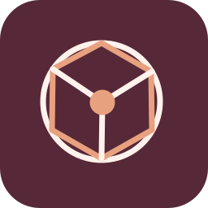
Hackathon / community platformCIRCLE EDGE
Connect local learning, opportunities and community participation.
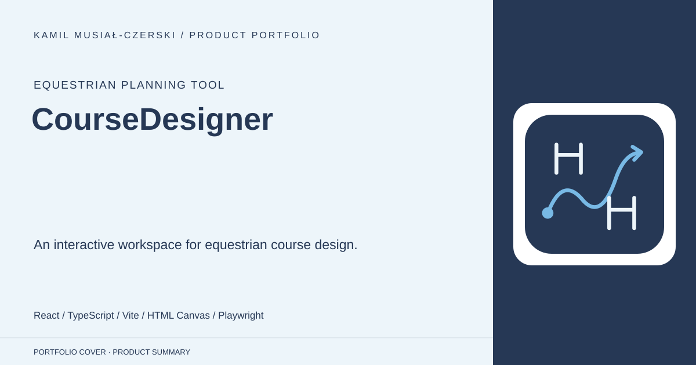
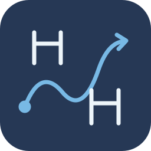
Equestrian planning toolCourseDesigner
An interactive workspace for equestrian course design.

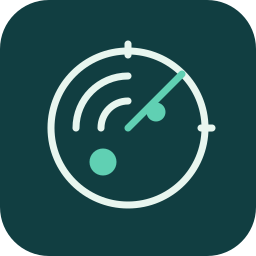
SaaS / AI intelligenceDotRadar
Make scattered grant information searchable and actionable.

EquiBrain
Bring equestrian-centre operations into one workspace.
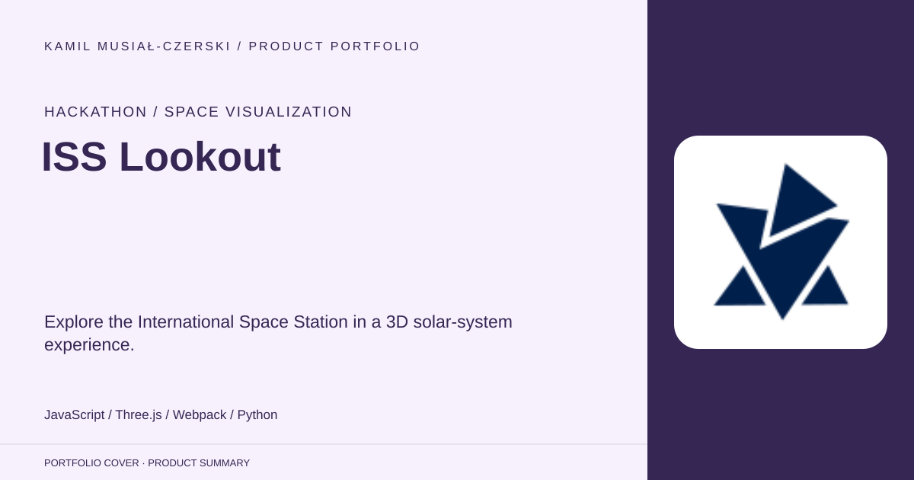
ISS Lookout
Explore the International Space Station in a 3D solar-system experience.
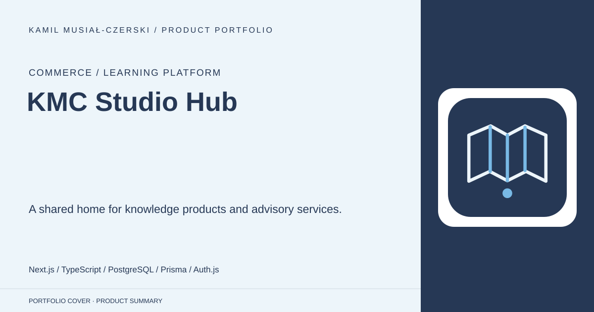
KMC Studio Hub
A shared home for knowledge products and advisory services.
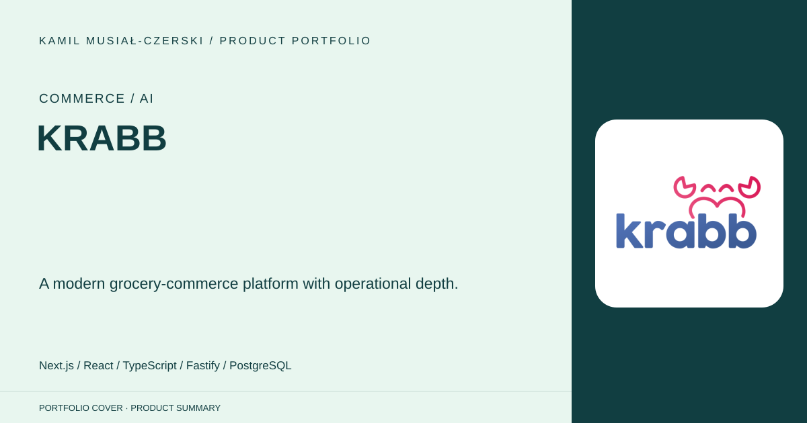
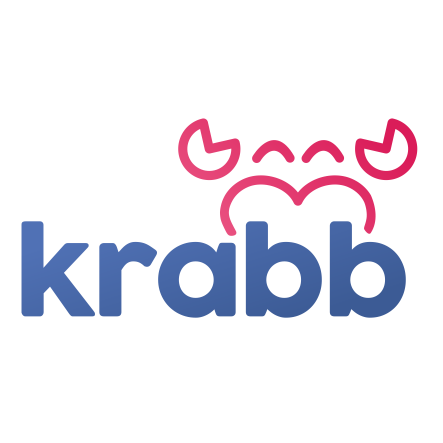
Commerce / AIKRABB
A modern grocery-commerce platform with operational depth.

Meta Agent AI
Turn discovery conversations into reviewable software artifacts.

Newsmap
Make interactive maps easier to navigate and operate.

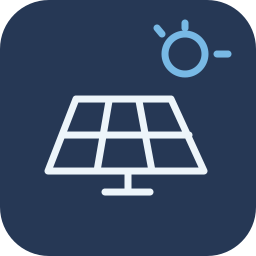
Business PlatformsRenewable Energy Sales Operations
Connecting sales leads, offers and delivery workflows.
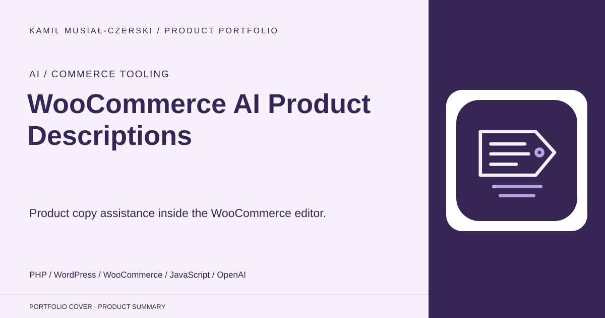
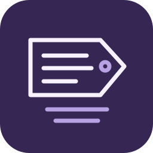
AI / Commerce toolingWooCommerce AI Product Descriptions
Product copy assistance inside the WooCommerce editor.
The complete collection
Products, prototypes and purposeful experiments.
AI Alt Text Generator
Image descriptions, reviewed where you manage your media.
Avatar Engine
Build conversational experiences around knowledge and workflows.
BarMate
A private, on-device assistant for a home bar.
Beaver Educator — Retirement Simulator
Explore retirement scenarios through a guided, visual experience.
CHMURA+
Turn point clouds into understandable infrastructure.
CIRCLE EDGE
Connect local learning, opportunities and community participation.
CourseDesigner
An interactive workspace for equestrian course design.
DotRadar
Make scattered grant information searchable and actionable.
EquiBrain
Bring equestrian-centre operations into one workspace.
ISS Lookout
Explore the International Space Station in a 3D solar-system experience.
KMC Studio Hub
A shared home for knowledge products and advisory services.
KRABB
A modern grocery-commerce platform with operational depth.
Meta Agent AI
Turn discovery conversations into reviewable software artifacts.
Newsmap
Make interactive maps easier to navigate and operate.
Renewable Energy Sales Operations
Connecting sales leads, offers and delivery workflows.
WooCommerce AI Product Descriptions
Product copy assistance inside the WooCommerce editor.
Aider Launcher
Local coding assistants with a native macOS front door.
CO2UNTER
Translate everyday emissions into urban-greenery comparisons.
Confidential Enterprise Transformation
Engineering confidential business software with controlled delivery.
Conversational Travel Demo
A travel conversation that changes the interface as it unfolds.
EnergoID
Explore a connected data foundation for energy services.
Event Photo Gallery
A simple shared photo collection for a live event.
Event RSVP Platform
Personalized invitations with an organizer workspace.
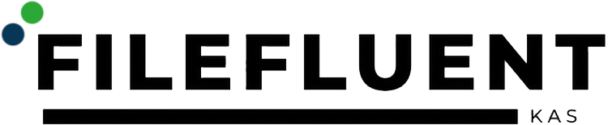
Document-workflow prototypeFileFluent
Turn administrative PDF text into structured metadata.
Financial Services Website
Making a broad financial-services offer easier to explore.
Freelance Opportunity Desk
Turn unstructured project offers into a usable pipeline.
Gemini Drawing Game API
A generative-AI backend for drawing-based game interactions.
ITRoom Digital Studio
A studio identity expressed through interactive web design.
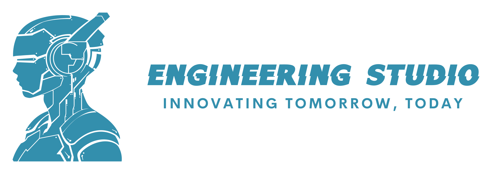
Portfolio / WebKamil Musiał Engineering Studio
An engineering practice presented as an interactive product.
KMES Autopilot
A designed workspace for coordinated coding agents.
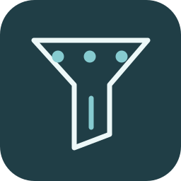
Automation / Internal toolLead Operations Workbench
Keep research, enrichment and follow-up preparation in one process.
Link Management Service
Short links with ownership, expiry and cached redirects.
MDE Core — Technical Review
Separate demonstrated AI behaviour from architectural claims.
Municipal News Intelligence
Collect local updates and classify them on your own machine.
Particle Hand AI
Move a particle field with your hands.
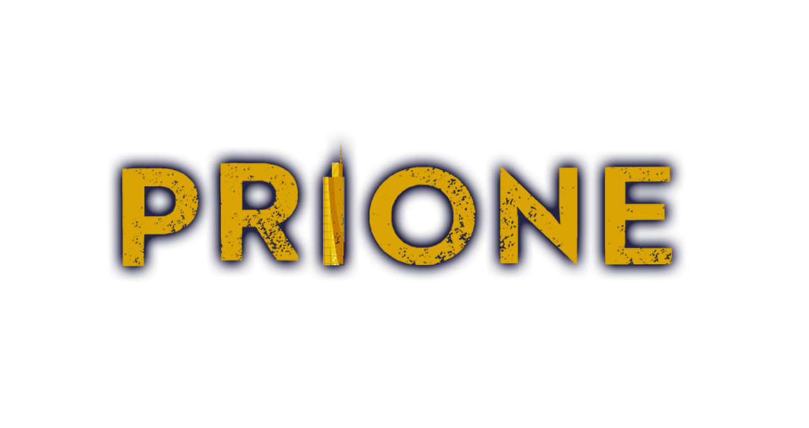
Games & Interactive R&DPrione
Narrative systems and visual tooling inside a Unity world.
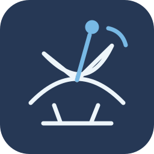
Hackathon / collaboration platformResearch Collaboration — NASA Space Apps 2023
A backend for discovering and organizing research collaboration.
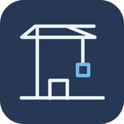
Construction / AI prototypeRico AI
A workspace for exploring connected construction workflows.
Seniorzy — Voice Booking Concept
Explore appointment navigation through a guided conversation.
SoCap Avatar AI
A conversational front end for a domain calculator.
Spaceflight Portfolio
Navigate a career portfolio as a spaceflight experience.
Subscription AI Assistant
An authenticated AI assistant with subscription-based access.
Sustainable Infrastructure Website
A clear digital front door for environmental infrastructure services.
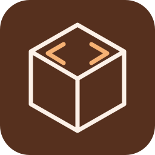
Developer platform / 3DWeb Game Engine
A typed runtime foundation for browser-based worlds.
Zdzisek Voice Translator
Speech in, translated speech out.
Advent Calendar
A small seasonal experience with persistent daily discoveries.
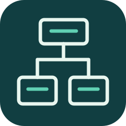
Architecture PrototypesCMS Domain Model
Modelling the building blocks of managed content.
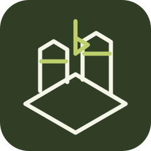
Game-engine experimentCrap RTS — 3D Scene Foundation
A Three.js scene foundation for a browser strategy-game concept.
Crypto Market Dashboard
Sortable cryptocurrency data and drill-down views.
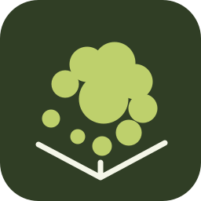
3D / ML experimentGaussian Rendering Lab
A C# exploration of Gaussian data, rendering and deformation.
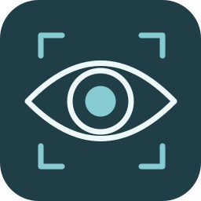
Computer-vision experimentGodEye — Camera Interface Experiment
A webcam interface with lightweight image-analysis experiments.
Health Assistant — Mobile UI Concept
A mobile onboarding foundation for a health-assistant concept.
Image Feature Template Lab
Browser-based image preprocessing and template generation.
Jarvis — NLP Command API
A lightweight natural-language command endpoint.
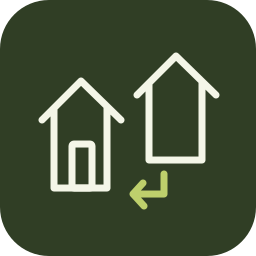
Developer ToolsNeighbourhood Listings API
A typed backend for local service listings.
NoteAPI
Account-linked text records through a compact REST API.
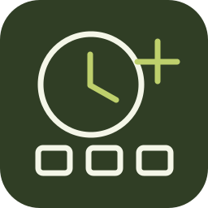
Personal ToolsPersonal Start Page
A quiet browser home screen with a live clock.
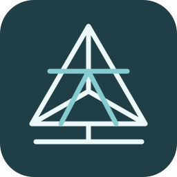
Graphics experimentPrione WebGL Engine
A small browser rendering engine built directly on WebGL.
SheepYourHack Communication Backend
A backend foundation for text and voice communication experiments.
Social Feed Prototype
Exploring a social product from API to interface.
Streaming Platform Domain Model
Structuring accounts, transmissions and conversation data.
Task List Interaction Prototype
A focused exploration of sortable task-list interactions.
Virtual Fitting Lab
Explore the interaction path from a photo to a 3D preview.
Void — Interactive Environment Experiment
Exploring movement and presentation in a real-time environment.
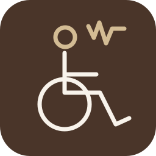
Assistive-technology architectureWheelchair BrainWaves — Architecture Concept
A modular architecture exploration for assistive mobility.